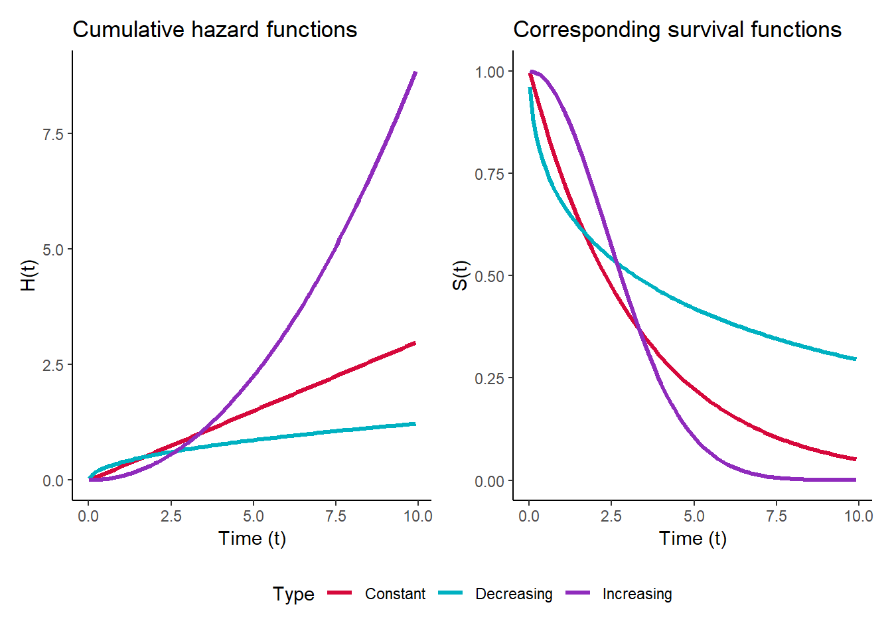

# load the required packages for fitting & visualising
library(tidyverse)
library(survival)
library(survminer)7 Introducing Cox regression
In this chapter, we’ll explore simple Cox regression models and how to interpret their output.
Note that this chapter only features code in R. It will be updated in future to include Python.
7.1 Libraries and functions
NoteClick to expand
import numpy as np
import pandas as pd
from lifelines import *
import matplotlib.pyplot as plt
from lifelines.statistics import multivariate_logrank_test
from lifelines.statistics import pairwise_logrank_test7.2 When do you need Cox regression?
So far our focus has been on the log-rank test, which is useful to make comparisons between two or three survival curves.
However, it has its limits.
Cox regression is more flexible and can be used to build more complex models than a log-rank test can manage.
You would need to use Cox regression (rather than a log-rank test) when:
- You want to make predictions about survival based on values of the predictor/independent variable(s)
- You have more than one predictor variable
- Your predictor variable(s) are continuous, rather than categorical
7.3 The basic idea
In a linear model, we predict values of a continuous outcome variable y. But in a Cox regression, we predict values of something called the hazard function.
Broadly speaking, you can interpret this hazard function as the risk of the event of interest occurring at a given time, under certain values of the predictor variable(s).
Conceptually, it’s a bit like a generalised linear model: a linear model that has been extended or transformed, to allow us to predict something that isn’t a continuous outcome variable.
7.3.1 A little more information
For more of the mathematical theory, you can check out the drop-down boxes below.
This level of understanding is not necessary for being able to apply Cox regression. If you prefer just to think about data and implementation, you can skip this and move on to the next section.
It might be helpful, however, to return to some of these ideas when the concept of proportional hazards comes up later in the course.
NoteThe survival function
There is a random variable \(T\) that represents a subject’s true time-to-event (often referred to as “survival time”). We can’t always observe \(T\) directly because of censoring.
We also have \(t\), which just represents time passing in its normal fashion (we won’t get into any relativity here, don’t worry…)
The survival function, which we can draw as a curve, shows the probability of an individual’s true time-to-event \(T\) exceeding a given time \(t\), which we can write as \(S(t) = P(T > t)\). In other words, it measures how likely an individual is to “survive” beyond a particular time without experiencing the event of interest.
Since the output of this function is a probability, it will always take values between 0 and 1. Generally the probability will decrease as \(t\) increases, but usually not linearly.
(Officially, this survival function asymptotes to 0, or in other words it approaches 0 as \(t \rightarrow \infty\) , implying that after an infinite amount of time every individual will experience the event.)
A standard survival function might look something like this:

The Kaplan-Meier estimator that we looked at in previous chapters is designed to estimate the survival function \(S(t)\). Of course we usually don’t have enough data to make it look this smooth and our data is usually censored, which is why we get a “staircase”-style approximation.
In Cox regression, however, we don’t estimate the survival function directly. Instead, we measure a related function, the hazard function.
NoteThe hazard function
The hazard function, \(h(t)\), captures for any given time \(t\) the instantaneous rate at which events will occur (it’s sometimes also called the hazard rate for this reason).
For example, at a single point exactly 10 days into a clinical study, how many people would you be expecting to go into remission? Or at a single point exactly 5 years into their lifespan, how many machines in a factory would you be expecting to fail?
In the plot below there are a few examples of different hazard functions:

Cumulative hazard
We can also track something called the cumulative hazard function, which we denote as \(H(t)\) - notice the capital H this time.
This tracks the total amount of hazard that an individual has accumulated up to time \(t\).
It is impossible for the cumulative hazard function to ever decrease, because the hazard function is not negative - i.e., the total amount of hazard can only decrease or remain the same.
(From a mathematical perspective, the hazard function \(h(t)\) is the first derivative of the cumulative hazard function \(H(t)\), i.e., \(h(t)\) captures the gradient of \(H(t)\).)
Here are the cumulative hazard functions associated with the hazard functions above:

NoteThe link between the hazard and survival functions
The survival function, hazard function and cumulative hazard function all link to each other and can be calculated from each other.
Let’s revisit the cumulative hazard functions shown in the plot above, and look at the corresponding survival functions:

Notice how the quicker we build up cumulative hazard on the left, the faster the survival function drops towards 0 on the right.
In Cox regression (unlike in Kaplan-Meier estimation), we estimate the hazard function. But by doing this, we can then infer the survival function as well.
NoteTransforming a linear model to predict hazard
The equation for a Cox regression looks like this:
\[h(t) = h_0(t) \times exp(\beta_1x_1 + \beta_2x_2 + ... + \beta_nx_n)\]
\(h(t)\) is the hazard function. This is what we are predicting values of, i.e, it is our outcome of interest. It is a function of time, meaning that we are predicting the hazard \(h\) at time \(t\). If we plotted it on a graph, \(h\) would go on the y-axis and \(t\) on the x-axis.
\(h_0(t)\) is the baseline hazard, and it acts as the intercept in our model (notice there’s no \(\beta_0\)). This means it is the value of the hazard function when all our predictor variables \(x_1, x_2, ... x_n = 0\) .
This baseline hazard still varies over time!
The part you will likely recognise is inside the brackets, and it’s called the linear predictor: \(\beta_1x_1 + \beta_2x_2 + ... + \beta_nx_n\). This is essentially a linear equation that is getting embedded inside another function/equation.
In this case, the non-linear part of the equation is quite simple: we’re raising Euler’s number \(e\) to the power of our linear predictor (known as exponentiating).
7.4 Fitting a simple Cox model
We’ll return to our hospital_stays.csv dataset.
hospital_stays <- read_csv("data/hospital_stays.csv")In this chapter, we’ll keep things simple by fitting a Cox regression with just one continuous predictor age.
cox_hosp <- coxph(Surv(time, discharged) ~ age,
data = hospital_stays)
summary(cox_hosp)Call:
coxph(formula = Surv(time, discharged) ~ age, data = hospital_stays)
n= 210, number of events= 189
coef exp(coef) se(coef) z Pr(>|z|)
age -0.053128 0.948259 0.006116 -8.686 <2e-16 ***
---
Signif. codes: 0 '***' 0.001 '**' 0.01 '*' 0.05 '.' 0.1 ' ' 1
exp(coef) exp(-coef) lower .95 upper .95
age 0.9483 1.055 0.937 0.9597
Concordance= 0.68 (se = 0.021 )
Likelihood ratio test= 73.28 on 1 df, p=<2e-16
Wald test = 75.45 on 1 df, p=<2e-16
Score (logrank) test = 78.37 on 1 df, p=<2e-16The syntax is identical to the survfit function we used in previous chapters: we provide a formula with the structure survival object ~ predictor(s), and then the dataset.
There! You’ve just fitted a Cox regression model to a time-to-event dataset.
We can see that we’re given some basic information to start with. This includes the total number of individuals, and the total number of events. The difference between these two numbers tells us how many individuals were censored in our study (in this case, \(210-189 = 21\) were censored).
Underneath that is where we start to get into the interpretation.
7.5 The hazard ratio
We’ve been provided with a row of quantities corresponding to our single predictor variable age. The most important one to focus on is the hazard ratio, which is the exp(coef) value.
It’s not essential to understand how it’s calculated, but if you’re curious, you can open the drop-down below for more information.
[INSERT DROP DOWN]
The most important thing to know is how to interpret this hazard ratio.
In the context of a continuous predictor variable, as we have here, the hazard ratio measures the change in the instantaneous risk of an event occurring for each one-unit increase in that variable, assuming everything else stays constant.
In other words, for each additional year of age, how much does the “risk” of being discharged from hospital change? When:
- HR = 1, this implies that the predictor has no effect on the risk
- HR > 1, risk is increased as the predictor increases
- HR < 1, risk is decreased as the predictor increases
In our example here, our hazard ratio is 0.9483. This tells us that each one-year increase in age is associated with a “risk” of hospital discharge that is 0.9483 times as large (about 5.2% lower) than that of someone one year younger. (So, being younger gets you discharged a tiny bit quicker.)
A 5.2% change might not seem like very much, but when we’re dealing with continuous predictors, hazard ratios that don’t seem far away from 1 can occur quite often. Remember that we’re only looking a single unit increase in the predictor (so just one year, in this example).
The effect will compound over multiple years; if we wanted to look at a 10-year age difference, for example, we can do that by raising our hazard ratio to a power of 10:
\(0.9483^{10} \approx 0.59\)
meaning that a patient who is 10 years younger has an approximately 59% higher chance of being discharged than an otherwise similar, but older, patient.
That feels more like a “result”, don’t you think?
7.5.1 How confident are we?
We also want to pay attention to the confidence intervals around our hazard ratio. The wider the interval, the less confident we should feel about the estimate of our confidence interval, and the less stock we should put in its value.
In our case, our interval is quite narrow:
\(0.9597 - 0.937 = 0.0227\)
and crucially, our confidence interval doesn’t “cross over” with 1 (remember that when the ratio = 1, this implies no effect of the predictor).
So overall, we can probably be pretty happy with our hazard ratio estimate.
7.6 Global significance tests
Underneath the information about the age predictor, we get some information about the model as a whole. The first number, concordance, will be discussed in the next chapter; here, we’ll focus on the global significance tests.
These tests are looking at the model as a whole. When we have multiple predictor variables, these global significance tests will give quite different results to significance tests of individual predictors.
There are three different methods for doing this:
- a Wald test
- a likelihood ratio test
- a log-rank/score test
The Wald test doesn’t work great when the sample size is small, and/or the coefficients are large. The score (log-rank) test is often better than the Wald test, but it doesn’t use as much information as the likelihood ratio test does.
This means that the best option of the three is the likelihood ratio test.
In the LRT, we are comparing our model against a null model, i.e., a model that contains no predictors at all. So we are asking whether our set of predictors, overall, does a better job of explaining our data than having no predictors at all.
7.7 Exercises
7.7.1 Lung cancer
7.8 Summary
A Cox model is more complex than a log-rank test, but also more flexible, and can be used for a wider variety of datasets. Here, we’ve shown how it can be applied to a dataset with a single continuous predictor, but we’ll add complexity in subsequent chapters.
When interpreting a Cox model, we can look at individual predictors or the model as a whole. The best metric to interpret is the hazard ratio.
TipKey Points
- Cox regression can be used to model survival (time-to-event) data when we have a continuous predictor
- In Cox regression, we are most interested in interpreting the hazard ratio, which tells us about the increase in hazard/risk as our predictor changes
- We can also extract p-values in multiple ways from a Cox model, with slightly different interpretations